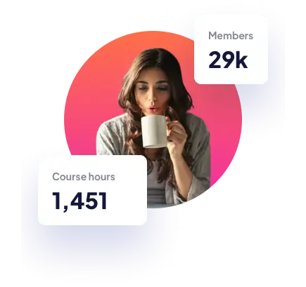
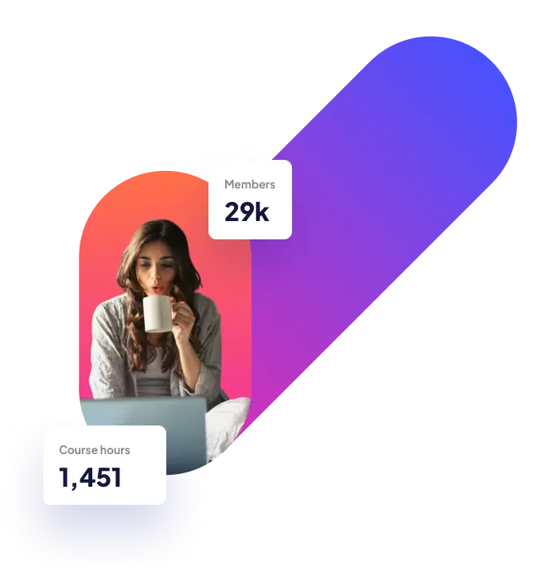
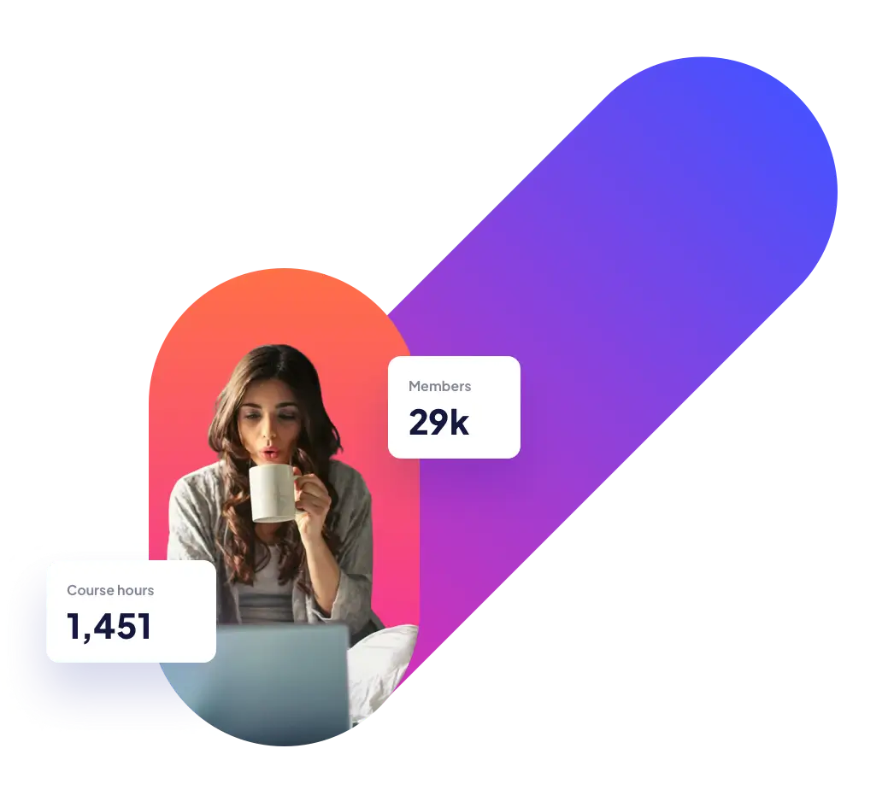

Maximize skill, minimize budget
Our modern courses across a range of in-demand skills will give you the knowledge you need to live the life you want.



Animation
Learn the latest animation techniques to create stunning motion design and captivate your audience.
Get StartedDesign
Create beautiful, usable interfaces to help shape the future of how the web looks.
Get StartedPhotography
Explore critical fundamentals like lighting, composition, and focus to capture exceptional photos.
Get StartedCrypto
All you need to know to get started investing in crypto. Go from beginner to advanced with this 54 hour course.
Get StartedBusiness
A step-by-step playbook to help you start, scale, and sustain your business without outside investment.
Get Started